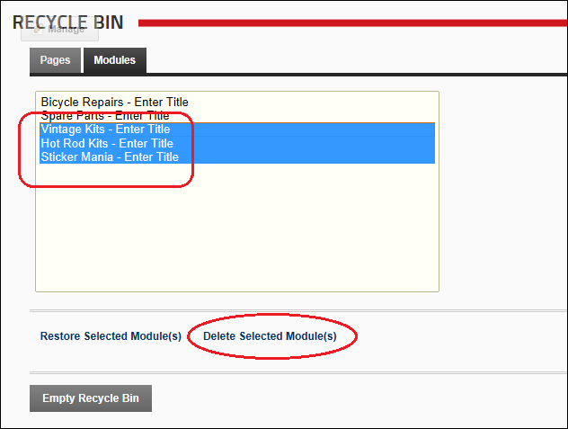

Deleting Modules from the Recycle Bin
How to permanently delete one or more modules (including module content) from your site using the Recycle Bin module.
- Navigate to Admin >
 Recycle Bin - OR - Navigate to a Recycle Bin module.
Recycle Bin - OR - Navigate to a Recycle Bin module.
- Select the Modules tab.
- Optional. If multiple languages are enabled on your site, select one of the following options:
- Show pages and modules from all languages
- Show pages and modules in current language only
- Click on a module name to select it. To select multiple modules, hold down the Ctrl key when selecting.
- Click the Delete Selected Module(s) button. This displays the message "Are You Sure You Wish To Permanently Delete This Module?"
- Click the Yes button to confirm.

Permanently Delete One Or More Modules